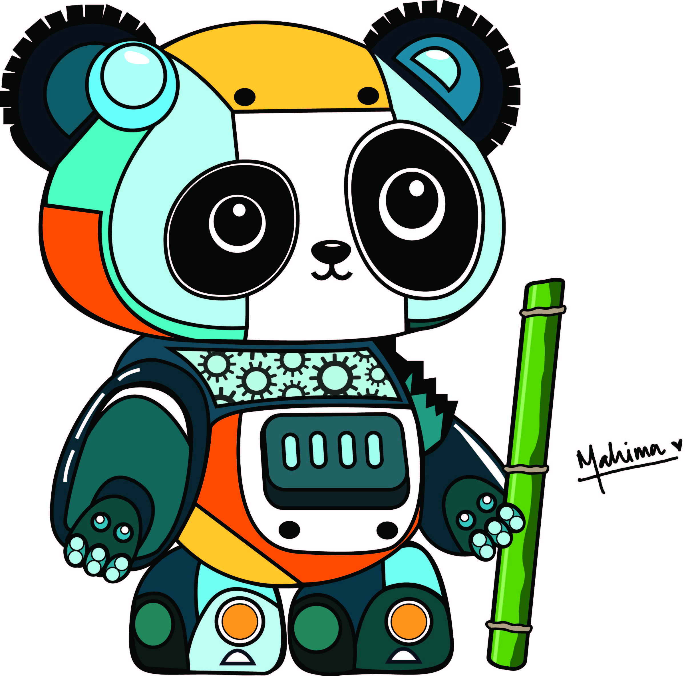
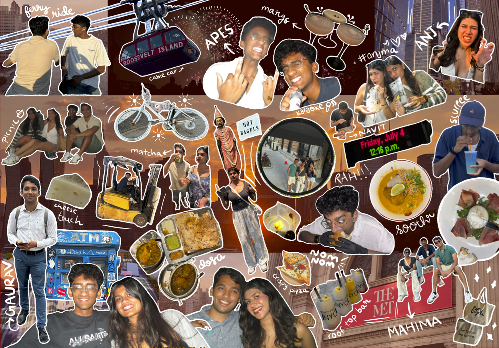

Artwork 3
Artwork 4
Artwork 5
Artwork 6
things I make.
I have always been drawn to making things with my hands. Growing up, art and craft were a constant presence in my life, something I picked up from my mother and my grandmother. There were always projects and ideas in motion, and creativity felt woven into everyday life rather than set apart from it.
As I got older, that curiosity found its way online. I spent hours watching DIY videos and trying to recreate what I saw, experimenting with paintings, crafts, and even clothing. I later enrolled in formal art classes that introduced me to more technical approaches, from still life and figure work to geometry, composition, and lettering. While I learned a lot, the structure eventually became overwhelming, and what once felt playful started to feel like pressure.
Over time, I realized I am most drawn to making without expectations. I gravitate toward craft, experimentation, and creative play. After finally getting an iPad, I began exploring digital art as a way to relax and turn memories into something visual. Along the way, I also explored tools across the Adobe suite, working through design, composition, and visual storytelling rather than traditional sketches alone.
This page is a small collection of that exploration. It is not about perfection or polish, but about returning to creativity for the joy of it, following ideas where they lead, and valuing the process even when projects remain unfinished. As I grow older, I am finding my way back to these practices not because I am good at them, but because they make me feel present.
Below is a small gallery of work from different moments and mediums. Feel free to take your time with it.

